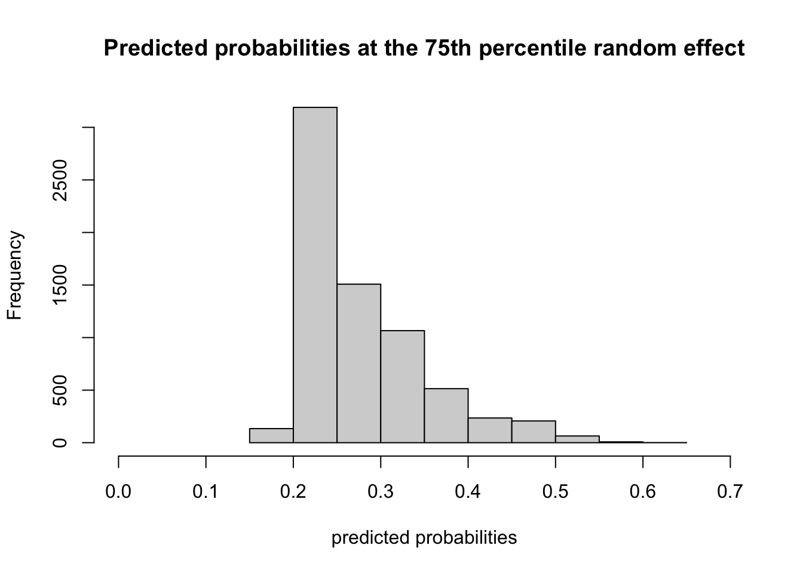

11 Multilevel logistic regression
Overview
- Explore how to deal with binary outcomes in multilevel framework
- Simple random-effects models for binary outcomes
Dataset
For illustration, we’ll use the 2018 PHMC Survey Dataset
- Note: this is a different data set than you’ll use in your project
Though a more fine-grained analysis can be had by exploring effects by Zip Code, the dataset also has a ZIPREGION variable has 31 levels (see p. )
Based on City Planning Commission Planning Analysis Sections. For Bucks, Chester, Delaware, and Montgomery counties the ZIPREGION categories were developed to provide geographic areas with sufficient sample size for most statistical calculations.
Twelve of them are in Philadelphia County, and the rest are North, Central, Central-South, etc. for Bucks, Chester, Delaware, and Montgomery counties
Let’s look at incidence of emergency department visits in the last year reported by respondents across these 31 regions:
# table of Hospitalization by ZIPREGION
hosp.by.z <- table(PHMC18$HOSPERA2, by = PHMC18$ZIPREGION)
# Chi-squared test
(chi2 <- chisq.test(hosp.by.z))##
## Pearson's Chi-squared test
##
## data: hosp.by.z
## X-squared = 130.49, df = 30, p-value = 1.699e-14## [1] 0.2719334The \(\chi^{2}\) test is extremely high powered, so not surprising that we find evidence that \(\hat{p}\) varies by ZIPREGION.
props <- hosp.by.z[2,]/(hosp.by.z[2,] + hosp.by.z[1,])
lattice::densityplot(props, xlab = "Proportion of Hospitalized Respondents per zipcode region")
We can, in fact, see that there is variability in the proportion of respondents reporting an ED visit in the last year across the regions. The density is relatively symmetrical.
- Note, this variable is actually a dichotomized version of a variable asking for how many times a person visited the ED, but not surprisingly, it’s relatively rare to visit the ED more than once in a year
11.1 Unconditional model
First, let’s get a model-based estimate of the between-cluster variability in proportions. Again, we do this by converting to the logit model
Level 1: \[ \text{logit}(P(Y_{ij} = 1)) = \beta_{0j} \]
Level 2: \[ \beta_{0j} = \gamma_{00} + u_{0j} \]
Again, note that the usual \(r_{ij}\) is not explicitly in level 1. It is dealt with in the estimation process.
In words: the log-odds of an ED visit is simply a function of the overall log-odds plus some effect of living in zip region \(j\)
11.1.1 Fitting the model
We will use the glmer function in the lme4 package, which is an extension of the glm function in the same way lmer is an extension of the lm function. The syntax is the same, and we add the family = binomial argument to obtain the correct model and link function (logit)
Important points:
- There is no
REML = FALSEorREML = TRUE, estimation is done using full maximum likelihood via either Laplace Approximation or Gaussian Quadrature (more on this next week) - We will only get variance estimation for the random effects at levels 2 and up
- We are given \(p\)-values based on Wald Tests, but they are not always accruate (more on this next week too)
## Generalized linear mixed model fit by maximum likelihood (Laplace Approximation) ['glmerMod']
## Family: binomial ( logit )
## Formula: HOSPERA2 ~ (1 | ZIPREGION)
## Data: PHMC18
##
## AIC BIC logLik -2*log(L) df.resid
## 8528.1 8541.9 -4262.1 8524.1 7327
##
## Scaled residuals:
## Min 1Q Median 3Q Max
## -0.8063 -0.6325 -0.5671 1.3607 2.0375
##
## Random effects:
## Groups Name Variance Std.Dev.
## ZIPREGION (Intercept) 0.07431 0.2726
## Number of obs: 7329, groups: ZIPREGION, 31
##
## Fixed effects:
## Estimate Std. Error z value Pr(>|z|)
## (Intercept) -1.02211 0.05684 -17.98 <2e-16 ***
## ---
## Signif. codes: 0 '***' 0.001 '**' 0.01 '*' 0.05 '.' 0.1 ' ' 1Main results:
- \(\gamma_{00} = -1.02\) so the model-estimated mean logit of ED visits is \(-1.02\)
To make this a probability we use the inverse link function:
\[ \begin{aligned} h(\eta) & = \frac{e^{(\eta)}}{1 + e^{(\eta)}}\\ & = \frac{e^{-1.02}}{1 + e^{-1.02}}\\ & = \frac{0.361}{1 + 0.361}\\ & = 0.265 \end{aligned} \] Contrast that with the population estimate \(\hat{p} = 0.272\) above. Here, the model-based estimate is cluster specific. So in the “typical” cluster, or one with a random effect of zero, we expect an ED visit with \(p = 0.265\)
- \(\text{Var}(\beta_{0j}) = \tau_{00} = 0.07\) or \(SD = \sqrt{\tau} = 0.273\)
The model-based distribution is shown below, with a rug-plot showing the observed log-odds across the 31 zipcode regions
- The code is based on Snijders and Bosker, and can be obtained at their website
# Estimated average log-odds is
b0 <- fixef(unc_mod)
# which transformed to a probability is
p0 <- exp(b0)/(1+exp(b0))
# The estimated level-2 variance is
tau00 <- (VarCorr(unc_mod)$ZIPREGION[1,1])
# with corresponding standard deviation
tau0 <- sqrt(tau00)
# Approximation formula (17.13) yields
var0 <- tau00*((p0*(1-p0))^2)
## observed log odds
logodds <- log(props/(1-props))
# The normal density in Figure 17.5 can be obtained by
x <- tau0*c(-100:100)/25+b0
y <- dnorm(x,mean=b0,sd=tau0)
plot(x,y, type = "l", xlab="log-odds of ED visit",ylab = "density", main = "Observed and model-based distribution of\nlog-odds of ED visits across zip regions")
rug(logodds)
11.2 Conditional model
Now let’s add some predictors at level 1. You’ll find that things will get complex very quickly in terms of running time of the fitting process. There are mathematical reasons for this involving the approximation of the likelihood function, which must be marginalized over the random-effects. If it sounds daunting, it is!
There are obviously numerous explanatory factors for an ED visit, and our model won’t be complete, but will suffice to illustrate how to add level-1 predictors.
Predictors:
- SEX01 (Male / Female)
- RESPAGE_4CAT - 4 category age variable
- BMI
- RESPRACE_4CAT - White, Black, Asian, Other
- NPOV100 - indicator for poverty
Stay tuned for quite a bit of output!
cond_mod <- glmer(HOSPERA2 ~ SEX01 + RESPAGE_4CAT + scale(BMI) + RESPRACE_4CAT + NPOV100 + (1|ZIPREGION), family = binomial, data = PHMC18)
summary(cond_mod)## Generalized linear mixed model fit by maximum likelihood (Laplace Approximation) ['glmerMod']
## Family: binomial ( logit )
## Formula: HOSPERA2 ~ SEX01 + RESPAGE_4CAT + scale(BMI) + RESPRACE_4CAT + NPOV100 + (1 | ZIPREGION)
## Data: PHMC18
##
## AIC BIC logLik -2*log(L) df.resid
## 7917.5 7992.8 -3947.8 7895.5 6916
##
## Scaled residuals:
## Min 1Q Median 3Q Max
## -1.1945 -0.6003 -0.5322 1.1341 2.4108
##
## Random effects:
## Groups Name Variance Std.Dev.
## ZIPREGION (Intercept) 0.01818 0.1348
## Number of obs: 6927, groups: ZIPREGION, 31
##
## Fixed effects:
## Estimate Std. Error z value Pr(>|z|)
## (Intercept) -0.645074 0.126977 -5.080 3.77e-07 ***
## SEX01Female 0.109431 0.056905 1.923 0.054474 .
## RESPAGE_4CAT35-49 -0.094279 0.117951 -0.799 0.424113
## RESPAGE_4CAT50-64 -0.117714 0.105760 -1.113 0.265698
## RESPAGE_4CAT65+ -0.009925 0.103941 -0.095 0.923927
## scale(BMI) 0.122698 0.027196 4.512 6.43e-06 ***
## RESPRACE_4CATBlack 0.385136 0.076132 5.059 4.22e-07 ***
## RESPRACE_4CATAsian -0.303373 0.261972 -1.158 0.246849
## RESPRACE_4CATOther 0.370979 0.109083 3.401 0.000672 ***
## NPOV100Not in poverty -0.562270 0.078256 -7.185 6.72e-13 ***
## ---
## Signif. codes: 0 '***' 0.001 '**' 0.01 '*' 0.05 '.' 0.1 ' ' 1
##
## Correlation of Fixed Effects:
## (Intr) SEX01F RESPAGE_4CAT3 RESPAGE_4CAT5 RESPAGE_4CAT6 s(BMI) RESPRACE_4CATB
## SEX01Female -0.259
## RESPAGE_4CAT3 -0.579 -0.033
## RESPAGE_4CAT5 -0.665 -0.032 0.711
## RESPAGE_4CAT6 -0.685 -0.044 0.724 0.816
## scale(BMI) 0.028 0.018 -0.061 -0.087 -0.045
## RESPRACE_4CATB -0.201 -0.083 0.015 0.030 0.047 -0.098
## RESPRACE_4CATA -0.126 0.030 0.048 0.081 0.098 0.018 0.074
## RESPRACE_4CATO -0.228 -0.020 0.077 0.117 0.150 -0.029 0.238
## NPOV100Ntip -0.557 0.054 -0.021 -0.006 0.002 0.040 0.104
## RESPRACE_4CATA RESPRACE_4CATO
## SEX01Female
## RESPAGE_4CAT3
## RESPAGE_4CAT5
## RESPAGE_4CAT6
## scale(BMI)
## RESPRACE_4CATB
## RESPRACE_4CATA
## RESPRACE_4CATO 0.063
## NPOV100Ntip 0.034 0.087Some things of note:
- BMI is a numeric variable, which should be cluster-centered. Here, I quickly used grand-mean centering via the
scale()function, which turns BMI into mean-deviation form - Even though we have not included any ZIPREGION level variables, the residual variance of the random effects has dropped to \(\tau_{00} = 0.018\)
- There seems to be no evidence for age-related differences in log-odds between the youngest respondents and the 3 oldest
- The other effects are as we might expect
Also, the Laplace approximation can be improved upon, and we’ll demonstrate now with Gaussian Quadrature. Note my call to system.time
system.time(cond_modq <- glmer(HOSPERA2 ~ SEX01 + RESPAGE_4CAT + scale(BMI) + RESPRACE_4CAT + NPOV100 + (1|ZIPREGION), family = binomial, data = PHMC18, nAGQ = 10))## user system elapsed
## 2.727 0.037 2.764Below we see that the fixed effects are identical and the random effect variances differ only at the thousandths place:
## Laplace AQ
## (Intercept) -0.645 -0.645
## SEX01Female 0.109 0.109
## RESPAGE_4CAT35-49 -0.094 -0.094
## RESPAGE_4CAT50-64 -0.118 -0.118
## RESPAGE_4CAT65+ -0.010 -0.010
## scale(BMI) 0.123 0.123
## RESPRACE_4CATBlack 0.385 0.385
## RESPRACE_4CATAsian -0.303 -0.303
## RESPRACE_4CATOther 0.371 0.371
## NPOV100Not in poverty -0.562 -0.562## Groups Name Std.Dev.
## ZIPREGION (Intercept) 0.13484## Groups Name Std.Dev.
## ZIPREGION (Intercept) 0.1350211.3 Interpreting odds ratios
When interpreting results from generalized linear mixed effects models, nothing changes when we don’t use the inverse transformation. That is, the results below can be interpreted as normal:
| HOSPERA 2 | |||
|---|---|---|---|
| Predictors | Log-Odds | std. Error | p |
| (Intercept) | -0.65 | 0.13 | <0.001 |
| SEX01 [Female] | 0.11 | 0.06 | 0.054 |
| RESPAGE_4CAT35-49 | -0.09 | 0.12 | 0.424 |
| RESPAGE_4CAT50-64 | -0.12 | 0.11 | 0.266 |
| RESPAGE 4CAT [65+] | -0.01 | 0.10 | 0.924 |
| BMI | 0.12 | 0.03 | <0.001 |
| RESPRACE 4CAT [Black] | 0.39 | 0.08 | <0.001 |
| RESPRACE 4CAT [Asian] | -0.30 | 0.26 | 0.247 |
| RESPRACE 4CAT [Other] | 0.37 | 0.11 | 0.001 |
| NPOV100 [Not in poverty] | -0.56 | 0.08 | <0.001 |
| N ZIPREGION | 31 | ||
| Observations | 6927 | ||
- So for example, holding age, BMI, race and poverty status constant, the log-odds of an ED visit is increase by \(0.11\) for females compared to males.
However, for the odds ratios, we have to exponentiate. This is a non-linear transformation and brings the model back to it’s non-linear form.
- As discussed, we can obtain odds ratios and confidence intervals, but bootstrap or even profile-likelihood-based intervals can take a while to return. For now, we’ll use the
Confintfunction fromcarwhich is based simply on the normal approximation to the log-odds betas
## Estimate 2.5 % 97.5 %
## (Intercept) 0.525 0.409 0.673
## SEX01Female 1.116 0.998 1.247
## RESPAGE_4CAT35-49 0.910 0.722 1.147
## RESPAGE_4CAT50-64 0.889 0.723 1.094
## RESPAGE_4CAT65+ 0.990 0.808 1.214
## scale(BMI) 1.131 1.072 1.192
## RESPRACE_4CATBlack 1.470 1.266 1.706
## RESPRACE_4CATAsian 0.738 0.442 1.234
## RESPRACE_4CATOther 1.449 1.170 1.795
## NPOV100Not in poverty 0.570 0.489 0.664Above, we must now interpret the association between sex and odds of ED visit as follows:
Holding all other variables constant, and the cluster / random effect constant, females have \(12\%\) greater odds of an ED visit compared to males
This is why the mixed-effects logistic regression is referred to as “cluster-specific” (compared to say, GEE which is a “population average model”)
Greater insight to this issue can be found here and we’ll briefly look at an example.
Here’s a histogram of the predicted probabilities of ED visit holding the random effect constant at \(-0.0581\) which is the 25th percentile of the random effects:

## [1] 0.2302176And now here’s a histogram of the predictions at the 75th percentile, a random effect of \(0.062\)

## [1] 0.2521749The distributions are slightly different, but the median predicted probability is about the same. So in this case, there isn’t a ton of variability due to the cluster, after conditioning on the within-cluster variables. So the fixed effects do carry some weight.
If, however, the distribution shifted quite a bit, we might conclude that although within a particular zipcode region, it would be good to focus on individual variables to potentially intervene to reduce ED visits, at it may be better to focus on equity efforts between low and high risk regions
We will discuss this more next week when we compare our results to the “population average model.”